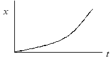
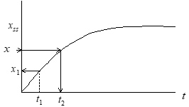
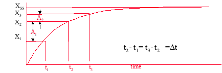
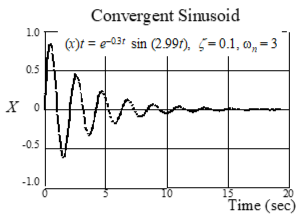
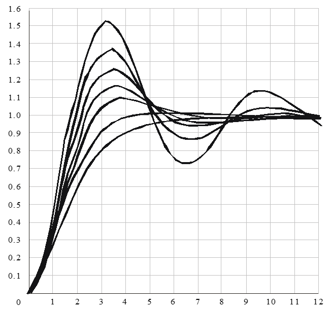
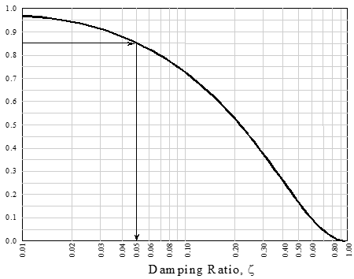
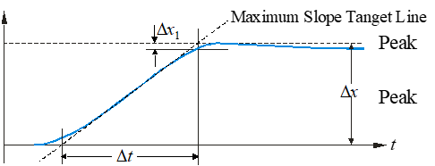
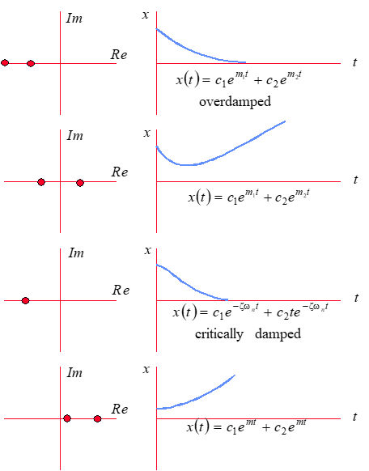
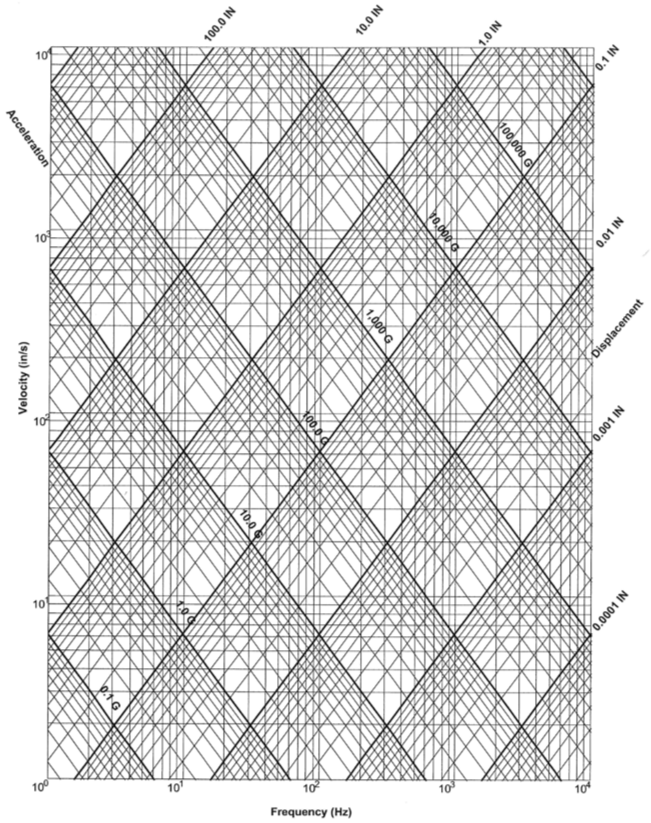

8 8 Motion/Vibration Analysis**
8.1 Recurring Abbreviations
8.2 First Order Motion
8.2.1 Elements of First Order Motion
8.2.2 First Order Motion Descriptive Parameters
8.2.3 Determining Descriptive Parameter τ
8.3 Second Order Motion
8.3.1 Elements of Second Order Motion
8.3.2 Second Order Motion Descriptive Parameters
8.3.3 Determining Descriptive Parameters
8.4 Complex Plane
8.5 Parameter Conversions
8.6 Vibration Nomograph
8.7 References
8.1 Recurring Abbreviations
8.0.0.0.0.1 C 1/x number of cycles to achieve 1/x amplitude
8.0.0.0.0.2 D damping
D1,D2 peak-to-peak displacement (subsequent)
FV final value
F(t) forcing function
f frequency, cycles/sec = ω/(2π)
HCAR half cycle amplitude ratio (i.e., x2/x1, x3/x2, etc.)
Im imaginary axis
M mass
MP peak overshoot
Re real axis
rms root mean square
s1, s2 equation roots of second order
T period = 1/f = 2π/ωd (seconds)
Td delay time (i.e., time to 50% of FV)
Tr rise time (i.e., time from 10% to 90% of FV)
Tp time to peak amplitude
TPR transient peak ratio
Ts settling time (time to settle within x% of FV)
T 1/2 time to achieve 1/x amplitude
x displacement
x1,x2 peak displacements (subsequent)
v velocity
vo peak velocity
ε =ζωn /ωd = ζ/\[1-ζ^2^\].5
φ phase lag (radians)
ζ damping coefficient (non-dimensional)
σ damping rate =ζωn = 1/τ
τ time constant =1/ζωn
ω frequency, radians/sec
ωd damped natural frequency (rad/sec)
ωn natural frequency (rad/sec)
8.2 First Order Motion
Found in classical aircraft roll and spiral modes. Named first-order because the motions are described by mathematics using the first derivative of a parameter.
8.2.1 Elements of First Order Motion
Mechanical analogy contains elements of mass, damping and
sometimes a forcing function.
Example: Determine the vertical velocity of a diver as she hits the water at 10 ft/s (assume constant body position & neutral buoyancy)
Summing vertical forces gives
Since D & M are constant
Apply initial condition
Plot response over time

• Exponential rate of decay described by D/M ratio
• Example 2: Diver with 20 lb submerged weight releases from zero velocity at top of pool (quiescent condition).
Solve using Laplace analysis methods:
This “force/damping” ratio is merely a scaling factor for the steady state.

• Several methods can be used to describe the quickness of convergence toward steady state (i.e., time to 99.999 % of Vss, time to 1/2 Vss).
• By convention, we use a % that directly reflects the exponent.
• Establish a time constant τ based on D/M.
8.2.2 First Order Motion Descriptive Parameters


when t = 0.6931τ: x = e−.6931 = 0.5 (time to half amplitude)
when t = τ: x = e−1 = 0.37
when t = 3τ x = e−3 = 0.05
when t = 4τ: x = e−4 = 0.02
If exponent > 0, then motion is divergent.

• τ again describes the exponential rate of divergence.
• By convention, the “time to double amplitude” (t2) is usually applied as the evaluation metric.
• x(t2) = 2x(0) where x(0) = cem0

8.2.3 Determining τ from Step Input Time History
Method #1
τ = time to reach 0.632 xss

Method #2

Method #3
1. Pick any time t1.
2. Draw tangent at t1.
3. Note t2 where tangent intercepts xss.
4. τ = t2-t1

Method #4 When XSS is unknown use

Method #5 When Xss is known, use
Linearity check:
Note parameter change between even time increments.
Plot parameter changes vs elapsed time on semi-log scale

Slope of line equals τ
Dp

8.3 Second Order Motion
Found in classical aircraft phugoid, Dutch roll and short period modes as well as noise filter and vibration testing. Named second-order because the motions are described by mathematics using the second derivative of a parameter.
8.3.1 Elements of Second Order Motion
Mechanical systems have elements of spring, mass, and usually damping. Forcing functions can be included (see illustration).

K = spring stiffness (F/x)
x = displacement from equilibrium
M = mass
F(t) = forcing function
D = damping
8.0.0.1
8.0.0.2
8.0.0.3
8.0.0.4 Natural character is observed when system is allowed to move with no external input \[*F*(*t*) = 0\]
8.0.0.5
8.0.0.6
8.0.0.7
8.0.0.8 Apply operator technique:
8.0.0.9
8.0.0.10
Divide out est, since it never equals zero, the characteristic equation remains:
The values of s that satisfy this equation are called the roots
Solve for the roots using the quadratic equation
8.3.2 Second Order Motion Descriptive Parameters
Solution (x) calculated as
Apply Euler’s identity for complex conjugate roots
• φ defines the phase shift.
• A defines the initial amplitude.
• The real part of the root \[*D*/2*M*\] defines the envelope of the motion.
• The imaginary part of the root identifies the damped frequency
of the oscillations, ωd (rad/sec).
• If damping is reduced to D = 0 then only \[*K/M*\]1/2 remains.
This is the undamped or “natural” frequency (ωη).
• If
then D is conisidered to be critical \[just enough to prevent oscillations\]
• For oscillatory motion, actual system damping is typically expressed as a fraction critical damping. Define damping ratio as


Possible Solutions:

• The various combination of K, M, and D and their effects on system response can be related to damping ratio ζ as follows:
ζ > 1 Real & unequal roots exponential, convergent
ζ = ± 1 Real & equal roots exponential, conv or div
0 < ζ < 1 Complex pair roots sinusoidal, convergent
ζ = 0 Imaginary pair roots sinusoidal, neutral
€
−1 < ζ < 0 Complex pair roots sinusoidal, divergent
ζ < − 1 Real & unequal roots exponential, divergent
Damping ratio effect on second order system
Response of various second order systems to an impulse input.
Second-order systems are oscillatory if
-1 > ζ > 1.
Motion typically
described by
ωn and ζ
T, ωd, ωn and ζ are linked such that knowledge of any two will yield
the other two.



2nd order system response to unit step input for underdamped systems
(0 > ζ > 1)

Decay rates (for 0 < ζ <1) and Useful Insights

8.3.3 Determining Descriptive Parameters
Time domain metrics

Peak Value, MP: largest value
Final Value, FV: steady state value
Delay Time, Td: 50% of final value
Rise Time, Tr: 10% - 90% of FV
Peak Time, Tp: time to MP
Settling Time, Ts: time to reach some defined % of final value
% Overshoot, PO:
target value = unity
Method #1 Basic Analysis
Note

Easily measured values: can use any points on envelope
Method #2 Transient Peak Ratio Analysis
1) Measure either D or x distances as shown.

Example Calculation

Average TPR = 0.8409
2) Note ratio of adjacent peak values (transient peak ratios).
3) Average several TPRs.
4) Use equation to find ζ:
4a) Can use
D1/D2 or x1/x2
ratios in above equation.
4b) In lieu of equation, use
adjacent look-up curve to find ζ.
4c) Time ratio method works better with heavy damping.

Method #3 Multiple TPR Analysis

To determine damping ratio
~ Use the m = 1 line when comparing the next ratio.
~ Use the m = 2 line for comparing every other
peak ratio.
Method #4 Time Ratio Analysis
• If the damping ratio is between 0.5 and 1.0 (two or less overshoots), then the time ratio method can be used to determine frequency and damping ratio. Select a peak where the response if free.
• Note times for amplitude to reduce to 73.6%, 40.9%, and 19.9% of the peak value.

• Form the time ratios t2/t1, t3/t1, and \[*t~3~-t~2~*\]/\[*t~2~-t~1~*\]
• Enter the next figure at the time ratio side to find ζ for each time ratio.
• This technique is valid if the system transfer function has no zeros.
• If recorded measurements are not available and if the number of overshoots is between 2 and 6, then
Frequency Time Products (wnDt3), (wnDt2), (wnDt1)



• Calculation of ζ somewhat sensitive to ∆x1 measurement
• ωn = not too sensitive to ∆x1
• Best if 0.5 ≤ ζ ≤ 1.4
• Initial overshoot approximation: let (step inputs only)
Method #6 Separated Real Root Analysis (when ζ>1)
1) Determine several steady state ∆X(t) values from time history

2) Plot ∆X vs t on semi-log scale

3) After the faster root has decayed, the semi-log plot will be a straight line whose slope determines the slower root (1/τ1)
4) Determine by extrapolating the straight line portion of the response to establish the values
Method #7 Modified Separated Real Root Analysis
• Method #6 is sensitive to errors in determining steady state values
• Alternate method is to avoid need for steady state value
• Define ∆X(t) ≡ \[ *x*(*t*+ ∆*T*) -*x*(*t*)\] where ∆T is a time increment
1) From time history, measure ∆X values according to definition
€
€
∆T = (t1-to) = (t2-t1), etc.
2) Plot ∆X (t) vs time on semi-log scale

3) Use previous method to determine roots and characteristics
• Gross error will result if ζ is actually <1
• If ζ is near 1, check results using time ratio or slope method
Method # 8 Frequency Sweep Analysis
Determine ωn and ζ using sinusoidal inputs.
• This “forced response” method most useful when damping is heavy.
• For a second order system, output/input amplitude ratio and phase shift are a function of input frequency.

• Amplitude ratio peaks at “resonant” frequency, ωr.
• Resonant peaks increase as ζ decreases below 0.707.
• Peak amplitude ratio “rolls off” as ζ increases above 0.707.
• Resonant frequency approaches natural fre
quency as damping decreases:
ωr = ωn\[1 − 2*ζ*^2^\].5
• Phase shift = 90° if excited at ωn, regardless of damping ratio.
ζ = 0.5(ω2 – ω1)/ωn

Frequency Sweep Analysis (continued)
1. Using sinusoidal inputs excite system @ ω near ωn
2. Measure phase lag (φ) of

3. Excite system @ another ω near ωn
4. Again Measure phase lag φ
€
€
€
€
€
€
€
€
5. Plot φ vs input frequency
6. ωn occurs at φ = 90°

Linearity Check /Accuracy Improvement
1) On semi-log scale, plot ratio of initial amplitude to subsequent peak
amplitudes at each half cycle (points a-e).
2) Fair straight line (f) through these points.

3) Draw line (g) parallel (f) intercepting the ordinate at TPR=1
4) Average TPR occurs at T/2 on line g
8.4 Complex Plane
Begin with sum of forces in spring-mass-damper example
Apply quadratic equation to solve for roots
Recall previous analogy

Location of Roots on Complex Plane
1. Line of constant damping ratio ζ − varying C1/n and ωn
2. Line of constant ωn − varying ζ
3. Line of constant ωd and period (T)
4. Line of constant real part (ζωn) and time to damp (T1/n)
σ = ζωn = 1/τ = damping rate

Sample second order root plots and corresponding time histories
(time histories represent trends only)
Examples of “two real roots”

More sample second order root plots and corresponding time histories
Examples of “imaginary roots”

8.5 Parameter Conversions
For conversion of accelerometer measurements.
• For magnitude conversion substitute 2πf for jω.
• Assumes linear spectra.
• Conversion factor should be squared for power spectra.
Acceleration to velocity
to convert from to multiply by
ft/s2 rms ft/s rms 1/jω
ft/s2 rms in/s rms 12/jω
ft/s2 rms in/s peak 16.97/jω
g rms in/s rms 386/jω
g rms in/s peak 545.8/jω
m/s2 rms mm/s rms 1000/jω
m/s2 rms mm/s peak 1414/jω
g rms mm/s rms 9806/jω
g rms mm/s peak 13865.7/jω
* *
Acceleration to Displacement
to convert from to multiply by
ft/s2 rms in rms 12/(jω)2
ft/s2 rms in p-p 33.9/(jω)2
ft/s2 rms mil p-p 33.9 E 03/(jω)2
g rms in rms 386/(jω)2
g rms in p-p 1091.6 E 03/(jω)2
g rms mil p-p 1091.6 E 03/(jω)2
m/s2 rms mm rms 1000/(jω)2
m/s2 rms mm p-p 2828/(jω)2
m/s2 rms micron p-p 2828 E 03/(jω)2
* *
E= engineering exponent (x10 __)
g = 32.174 ft/sec2
in= inches
mil = thousandths of an inch
mm = milimeters
p-p = peak-to-peak
rms = root mean square
8.6 Vibration Nomographs
Vibration Nomograph equations
For British \[V in inches/sec\], \[d in inches\]
V = 386g / 2πf
d = 386g / (2πf)2
where 386 = earth's gravitational pull \[in/sec^2^\]
For metric \[V in mm/sec\] , \[d in mm\]
V = 9800g / 2πf
d = 9800g / (2πf)2
where 9800 = earth's gravitational pull \[mm/sec^2^\]
Nomograph - British Units

Nomograph - Metric Units

8.7 References
8.7.1 Lawless, Alan R., Math and Physics for Flight Testers, “Chapter 9, Motion Analysis,” National Test Pilot School, Mojave CA, 1999.
8.7.2 Ward, Don, Introduction to Flight Testing, Texas A&M, Elsevier, 1993.
8.7.3 Lang, George F., Understanding Vibration Measurements,
Application Note 9, Rockland Scientific Corporation, Rockleigh, New Jersey, December 1978.
8.7.4 The Fundamentals of Modal Testing, Application Note 243-3,
Hewlett-Packard Company,
8.0.0.10.0.0.1 Additional Reading
Hartog, J.P. Den, Mechanical Vibrations, Dover Publications, New York, New York, 1984.
Jacobsen, Ludik S. and Ayre, Robert S., Engineering Vibrations, McGraw-Hill Book Company, New York, New York, 1958.
Meirovitch, Leonard, Elements of Vibration Analysis, McGraw-Hill Book Company, New York, New York, 1986.
Meirovitch, Leonard, Analytical Methods in Vibrations, Macmillan Publishing Company, New York, New York, 1967.
Myklestad, N.O., Vibration Analysis, McGraw-Hill Book
Company, New York, New York, 1944.